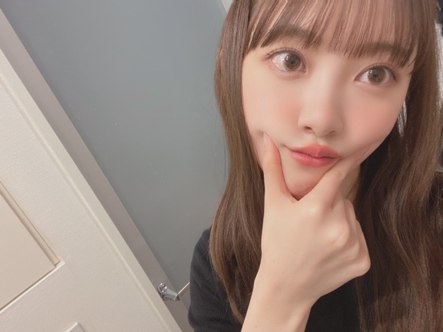
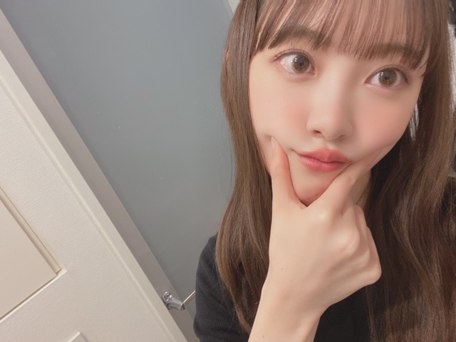
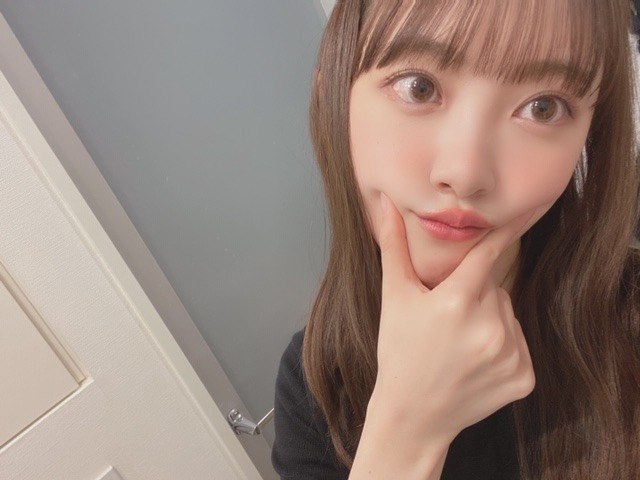

2020/0301Sun青カビタイプ
こんにちは〜
うちでは犬を2匹飼っていますがわたしは猫顔です。
でもうちの犬に似てるってよく言われます。
特にニコル。ニコルは写真フォルダの"ネコ"の一覧に振り分けられていました。
チワワなんですけどね。
だからまあニコル=チワワ=猫=私ということで！
純奈には、今の顔ニコルやんって頻繁に言われます。
似てるみたい。
そうそうこの間
真夏さん、りんごさん、みなみ、まあや、さくらちゃん、かずみさんと空き時間にパージっていう映画を観ました☺︎
私が個人的に観たくて楽屋で観ていたら人が集まってきて気づいたらみんなでワーワー言いながら観賞会してました。笑
いや〜面白かった〜！！
メンバーといると大家族みたいで楽しいです☺︎
あとはおうちで
MEGザモンスター
IT 最新章
を最近は観ました！
何回観てもMEGザモンスターのジェイソンステイサムが男前なんですよね。命をかけて人を守り助けられる人って素敵。
私も強い女性になりたい...

髪色明るくなってきた！
暗くしよーと。
あ、ちなみにどんなが髪色が見たいですか？
やったことない髪色にもしてみたいなぁ

 

そして最近またほっぺたがぷにぷにしてきたので
野菜中心生活を心がけようと思います。
スムージーも作ろう！
あとダンスの自主練も始めたのでたくさん汗をかいて痩せつつダンススキルをも、あげたいと思います☺︎

早くアナスターシャのMVを観てほしいな。曲も聞いてほしいしパフォーマンスも観てほしいです。
大好きな2期生が詰まっていて特別なものになりました。
では。
こんにちは〜
うちでは犬を2匹飼っていますがわたしは猫顔です。
でもうちの犬に似てるってよく言われます。
特にニコル。ニコルは写真フォルダの"ネコ"の一覧に振り分けられていました。
チワワなんですけどね。
だからまあニコル=チワワ=猫=私ということで！
純奈には、今の顔ニコルやんって頻繁に言われます。
似てるみたい。
そうそうこの間
真夏さん、りんごさん、みなみ、まあや、さくらちゃん、かずみさんと空き時間にパージっていう映画を観ました☺︎
私が個人的に観たくて楽屋で観ていたら人が集まってきて気づいたらみんなでワーワー言いながら観賞会してました。笑
いや〜面白かった〜！！
メンバーといると大家族みたいで楽しいです☺︎
あとはおうちで
MEGザモンスター
IT 最新章
を最近は観ました！
何回観てもMEGザモンスターのジェイソンステイサムが男前なんですよね。命をかけて人を守り助けられる人って素敵。
私も強い女性になりたい...
髪色明るくなってきた！
暗くしよーと。
あ、ちなみにどんなが髪色が見たいですか？
やったことない髪色にもしてみたいなぁ
そして最近またほっぺたがぷにぷにしてきたので
野菜中心生活を心がけようと思います。
スムージーも作ろう！
あとダンスの自主練も始めたのでたくさん汗をかいて痩せつつダンススキルをも、あげたいと思います☺︎
早くアナスターシャのMVを観てほしいな。曲も聞いてほしいしパフォーマンスも観てほしいです。
大好きな2期生が詰まっていて特別なものになりました。
では。
2020/03/01 12:16


コメント(361)
皆さん色々気をつけましょう‼
わたしは猫大好きだから超タイプ。
特に目が未央奈ちゃん美しすぎて、見惚れます…
すき！
朝の情報番組見た❤️
ＴＧＣの無観客は……ねぇ⤵︎⤵︎⤵︎
てか、
見たぞ‼️
乃木坂46のライブ❤️
みんなの強い瞳❤️
みんなの強い( ハート )❤️
素敵で力強いパフォーマンス❤️
最高❤️❤️❤️❤️❤️
すごいたいしたもんだ❤️
本当に本当にお疲れ様でした❤️
てかてか、
コロナウィルスで様々な所で
影響を与えています。
わたしもその影響を受けて仕事が……
ねぇ⤵︎
残念だけど
わたしの仕事もお客様がいなければ
立ち行かなくなります。まさに他人事ではありません。
これからどうなるか心配ですが、
いま思うのは一人一人が焦らず落ち着いて、
誤った情報です惑わされず
落ち着いて行動すること。
それしかないと思います。
あっ、時間が……
無理しないでくださいね❤️
（＾_＾）Ｖ
☆☆☆☆☆☆☆☆☆☆☆☆☆☆
。
まぁ、極論なんでもかわいいけど
未央奈ちゃんは自分の中では猫ちゃんのイメージだなー。
ニコル様とのツーショット見たいから
またいつか載せてね！
映画みんなで観ると楽しいよね！
特に、見終わった後にみんなと物語のその後について想像しながら話すのが好き！
２期生の新曲楽しみだなー！
MVもめっちゃ気になる！
さて、今週も頑張っていきますか！
ではでは～
堀さんが個人的に映画を楽屋で見ていたら、
メンバーが数人集まってきて一緒に映画を
見たのですね。
僕は今日の夜に ランページ という映画を
見ます。
動物が出てくるアクション映画だそうです。
1時間ごとに30分の休憩を取りながら
見ようと思います。
ダンスの自主練習を始めたのですね。
僕は家で2分ぐらい体を動かしてます。
適当に歩いたり腕を回したりするのを
２分ぐらいの動きを１日に何回もしてます。
インフルエンサーの腕の動きを
やってみたいです。
堀さんは猫のような顔なのですね。
今回のブログの写真は１枚目のが好きです。
ではまたコメントしますね☆
勁です。（つよし）
ブログ更新ありがとうございます！
今後頑張ってください！
応援してます！
みおなちゃんファイト！！！！！
俺もジェイソンステイサム好きー
でも未央奈の方がもっと好きー
アナスターシャ楽しみにしてる
ジャケ写かわいいぞー
ぷにぷに未央ちゃんも可愛い
納品ウォーズの未央ちゃんもかっこよかったよ
最近、1917って映画観に行ってきました 戦争映画だけど、ある意味ホラーよりもなんか怖いと思いました 是非未央ちゃんにも観てほしいです。
体に気をつけてお仕事頑張ってね
ちなみにジェイソンステイサム主演のメカニックという映画大好きです！！
2期生曲めっちゃ楽しみにしてます
MVも早く見たいです
確かに猫顔ですね～(^^)
今の髪型も可愛いですね◎
TGCお疲れ様でした！
2期のMVも楽しみにしてます♪
チャァオ～～!☆彡
プリンセスみおちゃん❕❤️❤️❤️❤️❤️笑顔
お目目まで、可愛いぃ～～～⤴️⤴️⤴️
ニコルちゃんに、本当に似てるよぉ～～⤴️⤴️❕❤️❤️❤️❤️❤️笑顔
可愛ええ～～～⤴️⤴️⤴️❕❤️❤️❤️❤️❤️笑顔
(σ≧▽≦)σ❤️❤️❤️
きのうの23時40分台もコメントしたお～、見てねぇ❕❤️❤️❤️❤️❤️笑顔
☆おすまし！より☆彡
髪色は赤が見てみたいです。
自分の好みですが、清楚な髪型が好きなので僕は黒髪のボブの堀ちゃんが一番好きです！
２期生のアナスターシャ、MV楽しみにしてます！
こんばんは、お仕事お疲れ様です。お忙しい中、ブログ更新もありがとうございます。
「乃木恋」と「アメトーク」さんで「犬派」、「チワワとチワックス」を飼っていると話されていたので、私も一緒でとても嬉しかったです！
私はいつか「シェパード」が欲しいなあ。可愛い系統よりも格好いい系統が好きなんです。笑笑
未央奈ちゃんの「猫顔」は本当に可愛くて、大好きです！私的には「下向き加減の伏し目顔」が特に好きです。1st写真集のニコ！って笑った顔は本当に可愛くて、いつも癒されてます！
私は黒髪が好きですけど、「どんな姿になられても未央奈ちゃん自身が大好き」というか、「未央奈ちゃんは未央奈ちゃんだから、これからもずっと大好きな事に変わりは無いし、応援していきたい」です。
映画だと私は最近、「ドラえもん 月面探査記」を観て、とても楽しかったです！笑笑
「ドラえもん 新恐竜」も楽しみなんです！笑笑
「美意識が高い所」も「お仕事とかメンバーさ
んとかスタッフさん達を大切にされている所」も「全部大好き」です。
未央奈ちゃん、新型コロナウイルスに負けないで下さいね。2nd写真集もずっと前から心待ちにしています。絶対に買いますね。
公式YouTubeとかで配信とかして頂けたら♪♪って夢のような事考えてしまいます。
MV楽しみにしてます
そうですね、なんとかね、堀さんはニコルという結論に至りましたね！…という結論に、持って行った？
そうですね、多くの人が思ってるだろうことですけどね、ほっぺたぷにぷにするのは反則級にかわいいです
そうですね、どんな髪色が良いかとのことですけど、個人的には今の髪色、ヘアスタイルがいいです。
そうですね、それではまたなにかお話したいことがあればコメントします。
健康にはお気をつけてお過ごしください！
未央奈ちゃんの髪ストレートでしたね。
２推しの
みなみが居て
最高の空間やん！
俺も
その空間に混ぜてくれーッ！(^^)
いや！
混ぜて貰ったら俺は
死んでまうでーッ！
いやいやいや！
死んでも本望やッ！
(⌒‐⌒)(⌒‐⌒)(⌒‐⌒)
薔薇は高貴な未央奈さんにふさわしい花ですね。
いい作品です。未央奈、めっちゃ可愛かった。
『しあわせの保護色』、毎日聞いてます。
今を生きる糧にしてます。
発売初日に絶対購入します!
うぉぉおおおお！可愛い……
可愛いぞぉぉぉぉ！
アスタナーシャ楽しみにしてるよ♪
福岡のトゥモロー⊿
何よりお母さんの手料理はママの味だからね！
今の顔ニコルやんって頻繁に言われるんだ笑
イコールで繋がってるからかな（╹◡╹）♡
楽屋もワイワイしてて楽しそうだね〜(о´∀`о)
今の髪色も良い
ダンスの自主練頑張って（╹◡╹）♡
アナスターシャのMV楽しみ♪(๑ᴖ◡ᴖ๑)♪
目がぁ。めがぁ、かゆい。
映画館で映画見たわけじゃないのね。
良いメンバー。いいなぁ。楽しそう。
いつもいつも更新ありがとさんです。髪色は栗色がすきっす。後はポニーテールかなぁ。宜しくね。
みおなのロングヘアだいすき！アッシュカラーみてみたい…。もしできるならグレージュとかもみてみたい！
コメント遅くなりました…
堀ちゃんのほっぺたの感じも
猫っぽい感じが出てる気が…笑
野菜中心時々お肉の
食生活目指して頑張ってね〜！
黒寄りの茶色っぽい髪色
似合うかも！！？
個人的に堀ちゃんは黒が
1番似合ってると思うから
黒系がいいかなぁ､、
MV公開楽しみや！！
次回の更新も楽しみにしてるよ！
では！！
好きです好きです
黒髪ボブ、ジコチューのときの髪型が見たいです！！！！！！！！！！！！！
この度は素手で敵人を倒す設定なんですけど、もし強力な武器を操れば十人二十人以上の大男でも瞬殺ができるかもしれないですね。いや、できます。
気になるのは凛子のお母さんが以前何か起こったみたいですね。どんな目にあったのでしょうね。
高速まばたきすごいなぁ。何の不思議な能力だ。笑
絶対、似合う (*´︶`*)❤︎
黒髪ロングストレートで！
すきぴんく笑
楽しみましたか？
コメントする